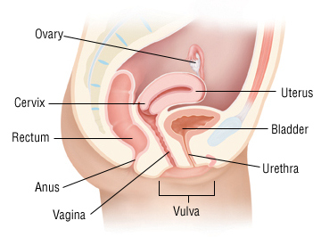
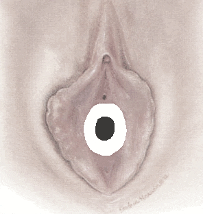
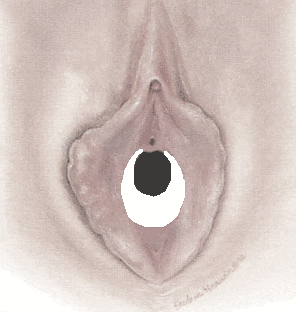
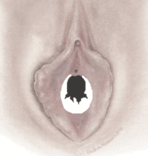
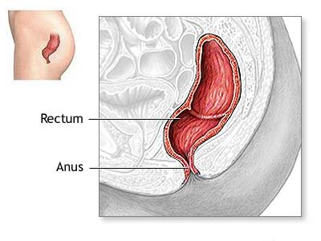
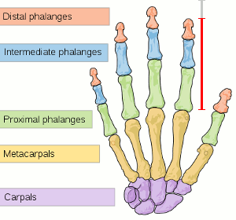

This chapter has been divided into 2 parts to spread the content and avoid having too much information at one page.
If you haven't yet read the first part, it is important to do so before continuing on this part.
Use the back and next buttons at the bottom of this page to navigate within the parts.
The Pedophile's Handbook
Handbook > Sex with Kids > Penetration Training Pt.2
Now is the time to start the penetration training program, which should only be done if you've already and successfully initiated a sexual relationship with a child.
Important
When you arrive at that spring cold lake in a swimming suit, ready to take that first bath of the summer, instead of just standing there and pinching your toe into the water, just get onto the diving board and dive straight into the lake.
We will in this second part of the penetration chapter do that exactly, just dive into it and begin training a child.
You will first learn how to expand children vaginas, and finally learn how to expand children rectums:
Vaginal Training
These are the instructions for training the vaginas of children girls from 1 year of age and older.

The Hymen
I will start by writing some crucial info about a child's hymen, which is important to learn before you start the training.
What is a hymen, really?
The hymen is actually a very misunderstood object. Most people think of it like the red band you place in front of a new tunnel; the town's major runs through it during an opening ceremony with a limousine, and the tunnel is officially open for regular traffic; as if nature or God made such a band on all girls so that having sex for the first time would become such a ceremony. And there after, it disappears forever, as a true representation of a girl's virginity.
This is a good example of a cultural and religious picture of the hymen, and less of a scientific and medical one.
Actually, the only fact we know in science is the apparent: that the hymen is commonly a partial membrane that surrounds the vaginal opening, to make some sort of an enclosure.
The reason for its existence will have to be left to the philosophers, because we simply don't know that. It may only be the vestige of the vaginal development, God was drunk when working on the vagina blueprint, or it may have a certain function that we yet haven't figured out, but should have done if it really had any logical purpose. It's just there, period. And we'll just and unfortunately have to deal with it.
And, having to deal with kiddie hymens as a pedophile can sometimes lead to problems:
A few children are actually born with a complete blockage that nothing can pass by, causing any penetration attempt to become extremely painful, and in some rare cases impossible without surgery first. It can even obstruct puberty menstruation.
A few other children are born with partially blocked hymens, like with two or several large holes in them, or several tiny, making it necessary to really pop them to achieve a successful penetration, which also may cause severe pain.
Luckily, the majority of children aren't that problematic:
The most common types of hymens you'll encounter among children girls are annular and crescent shaped. These are illustrated below, the white part highlighting the actual hymen, and the black part highlighting the actual hole.
They are usually annularly shaped at birth, with a circular hole in the middle:

Please note that the hymens of babies and toddlers are usually pretty thick and redundant, unlike the image illustrated above, as in folding in on themselves and bulging out some, making the holes rather difficult to see without stretching the outer lips in various directions.
The latter is important and will be taken into consideration when we later start the training for real.
Then it gradually becomes more crescent shaped with age, when they explore themselves with e.g. fingers and objects, and being active within e.g. gymnastics or horseback riding, making their hymens usually tear away some at the top:

Of course, asexual children who rarely touch themselves may keep their annular hymens until puberty and adulthood, especially those who additionally are less active.
When you start the penetration training, and especially after having penetrated the child fully with your penis, the hymen will end up looking more like this:

This also regards the annular sample in the first image.
This pattern is what the health professionals are looking for when they're examining a child for sexual abuse and rape suspicions, as the lower part of the hymen is usually teared in such a pattern close after a complete vaginal penetration.
Though, kiddie hymens tend to heal themselves pretty quickly, which will level out that lower and teared part, making it much harder to prove rape after a certain amount of time.
Therefore, the harder and faster you train a child, the more severe these tearing patterns will become, and the longer it will take for the hymen to heal itself.
In most vaginal assault rape cases of young children, the hymen never heals fully, and will always stay teared.
The average hymen, from about late preschool age and older, is generally very thin, almost like the skin outside your body. But it's still kind of elastic, and sometimes hard to just break through, which anyway varies some between all females.
It's about 0.05-0.10 inches (0.125-0.25 cm) thick on average.
Actually, the hymen is at its thinnest when the girl is approximately 6, making that stage very ideal to pop her, if she's tough enough to stand that short sting of pain.
Unlike popular myths out there, the hymen does actually not disappear at first. It will continue to stay there in one shape or another; and to some girls be a painful problem, while to others feel like non-existing and problem-free. The average hymen does only disappear fully when the female gives birth to a baby, especially several babies.
A few children are actually born without a hymen. If only everyone had been born like that, right? This will obviously make things a lot easier for a pedophile.
Please don't let the hymen scare you too much, as it usually doesn't cause any complications in regards to penetration training of little girlies. But you still have to be prepared for a huge disappointment if your child, and the love of your life, can't be easily penetrated, or not be penetrated at all.
The First Inspection
Before you can insert anything into a vagina, it will have to be closely inspected first.
If you have practiced penetration pedagogy with your child, and is thus dealing with a consenting child whom is prepared for a penetration attempt, just say that you will inspect its vagina before you start. This will become quite exciting for the child, while also making it feel safe and comfortable.
If you're doing this without any penetration pedagogy, or when dealing with toddlers, you can do this as a part of a masturbation activity; which will make the child relaxed and aroused, thus more tolerant for both fiddle and penetration.
If you only want to inspect the vagina for now, like if being new and skeptical to this, you may of course perform an inspection just for fun and curiosity; which doesn't require any penetration consent from the child, neither any arousal.
The ideal thing now is to have the child lie comfortably down on its back on an elevated surface, like on a bed or a changing bench, while you sit right in front of its vagina, being able to look straight into it.
Move the outer lips of the vagina gently to the sides, which should also move the inner lips in the same way, and then push it a little bit upwards and downwards. This should eventually expose the child's hymen, and give you some initial idea about what you're up against. I recommend using two hands for this, as in using your thumbs, for better control.
This should not become any painful, but still be gentle.
You may want to use some extra lighting if the current room is a bit dimmed, so you'll get a better look into the vagina. Optionally, use a flashlight, which might seem funny to the kid.
Ideally, you should see a hole all the way through and into the cervix, which basically is the end of the vagina. This hole should be a single hole in the middle of the hymen, which may seem pretty tight among the younger children.
An average cervix will look donut shaped.
The younger children, between the ages of 1-3, usually have very redundant hymens as well; so try pulling the vagina in different directions and see if you can find a hole in there.
Children between the ages of 1-5 may also have their inner vaginal lips (Labia Minora) fused together, either fully or partially, making it hard for an untrained eye to separate between the labia and hymen; it will simply seem sealed.
If you're unlucky, you may encounter a fused labia, or even a sealed hymen. You may also encounter a hymen that is unusual; like instead of having one convenient hole, it has 2 or 3 smaller holes, or even several tiny.
Fused Labia
A fused labia can be unsealed by gently applying some bland ointment or diaper rash creme over the sealed part, regardless of the child's age, and doing this regularly for a few weeks or months. Make sure to rub your finger against the sealed area each time when applying the salve, but not hard.
If regular intimate salves or cremes don't work, some pediatricians prescribe estrogen cream to parents. There are also versions of this creme that can be bought over the counter, and is almost just as effective. If you choose to use such a creme, first look at the package for all the side effects that may occur, and see if the use of it is worth the risk of others noticing these side effects. Second, only apply the creme onto the affected area, and nowhere else. Finally, don't overuse it, as it actually manipulates the hormone balance within the child, which has side effects on its own.
Use latex gloves when applying the creme, so you don't end up yourself with enlarged breasts and a female voice(!).
Unsealing it with pure force is never recommended, as it usually is quite painful for the child, and will leave the affected area red and tender afterwards, which will most likely alarm other adults in one way or another, sooner or later.
My common recommendation for this problem is to masturbate the child a lot while using bland ointment or diaper rash creme, and rub the vagina harder when or if the child becomes sexually aroused during this 'treatment'. And just keep on doing this for as long as it takes.
This mostly affects 0-6 year olds, and is generally rare.
Sealed Hymen
A sealed hymen may be unsealed by the penetration training itself; as some of them are pretty thin and fragile, thus can be popped and penetrated pretty conveniently.
However, the youngest children, like the 1-4 year olds, do usually have thicker hymens than average, making pure penetrations quite painful for many; and may even cause trauma if too much force is applied to a problematic hymen.
Actually, some sealed hymens are so unusual that only surgery at a medical center or hospital can solve the problem. So, always be careful when attempting to pop one, and never take for granted that it will.
If you want to make a penetration attempt to pop a difficult hymen, simply continue reading, as we'll get to the very first insertion soon.
... continued
Finally, notice the width of the child's vaginal canal, so you can prepare the most suitable penetration tool. Also notice its length, whether being to the hymen, it's cervix at its very end, or both, so you know how far to push an object into the child.
And that's about it, and you're done with the first inspection, which really isn't all that complex.
If you feel uncomfortable practicing penetration training after this first inspection, you should probably not do it; and alternatively train the rectum instead, which is far easier to train, at least for you, with no obstacles in your way.
The First Insertion
The very first insertion of an object into a child's vagina can become a challenging procedure; especially if the child is a late preschooler or young elementary schooler, as these tend to have very sensitive hymens. Some of these children also have penetration anxieties.
But it can also become a very positive operation; and we'll aim for this by being very gentle, careful and respecting the child's own boundaries; not to mention, trying to make the little beauty as sexually aroused as possible.
The first insertion is not about a large and full penetration of the vagina with any object, it is all about just starting to feel your way through this exciting training and expansion process.
However, if you are able to successfully do a full penetration during the very first insertion, well, then you're already far on your way to Heaven itself!
Just don't expect too much of yourself nor the child, and be patient during this critical start.
Preparations
Since all the chapters within this guide is required to be read before going about this penetration training, I will assume that you now posses the knowledge about how to make the initial preparations for this session, including security. Look at this as your first solo-flight in this regard, and an important part of becoming a professional pedophile.
Though, I will still help you with all the preparations that are specific for this somehow critical session:
If you plan on initiating the first insertion right after the first inspection, these preparations would be wise to do before that first inspection, so the child can just keep on lying comfortably down as you start.
If this is a new session, have the child lie down in the exact same way as it did during the first inspection.
All the necessary equipment must be ready:
- Penetration tools (of various sizes)
- Ideal lubricants
- Wet baby tissues (to wipe off any blood)
- Dry baby tissues (to wipe the kid dry when done)
- Non-transparent plastic bag (to throw away used tissues)
Some children may become concerned with all this equipment being set up; thus I commonly advice penetration trainers to discreetly hide at least the three last objects on the list in advance, while still having them easily accessible; like under the bed you're using for the training.
A first-time vaginal penetration may cause bleeding. It doesn't have to happen, but it can. So, you must be prepared for it:
This bleeding is initially nothing to worry about, as a healthy vagina of a young child works in pretty much the same way as a healthy vagina of an adult female does; and adults may also bleed some after the first penetration.
However, this may become a dramatic session if the child sees any blood, which may cause it to freak out and cry, even scream. The child may go totally bananas if there's pain involved as well, as a hymen pop may cause a great sting of pain among young children.
Such scenarios may seem like the world is about to end, or that the devil has found his way up through the earth's crust somehow, but is almost always just drama, and nothing more; thus, nothing to get any heart attack over, nor any reason to start running towards the nearest cliff or train track.
Actually, several pedophiles have panicked in such scenarios, and done some really stupid stuff!
The child usually enjoys watching it when you play with its vagina, and especially if the both of you have decided to make a penetration attempt. So, warning the child about blood and pain might be a good pre-solution to this problem. But, and as always, it may also scare the child from dong it.
Just comfort the child if it gets upset from any bleeding, and repeatedly explain that this happens to all girls who get something inside their pee-pees or vaginas for the first time; which is all normal and all fine, and turns all little girls into big girls. And finally tell the sweetie that she's a big girl now!
The more calm you are when children freak out, the quicker the children will calm down themselves, eventually.
You may thus want to have the child lie down on its back, while staring at the sealing, during this first penetration attempt; if you're able to arrange this session in this way.
Security
Even though most bleedings from hymen pops are light, and normally stops within 5-10 minutes, there are always some exceptions out there.
Some females may bleed for several hours after a hymen pop, and others for several days. Though, this bleeding is usually very light and will eventually stop; but is still risky in terms of other caretakers and adults taking notice, which will obviously set various alarms off.
A very small percentage of females may bleed more severely, which in some cases will require a doctor's appointment, making it an even worse situation for the both of you to end up in.
Some females may bleed for several hours after a hymen pop, and others for several days. Though, this bleeding is usually very light and will eventually stop; but is still risky in terms of other caretakers and adults taking notice, which will obviously set various alarms off.
A very small percentage of females may bleed more severely, which in some cases will require a doctor's appointment, making it an even worse situation for the both of you to end up in.
Solutions
Most bleedings that last for a while, usually last for 'only' a few hours after the first penetration, and is light. Thus, putting a regular menstrual pad into the child's panties afterwards, is a well used method among pedophiles in such situations.
A menstrual pad will stop any regular bleeding from going through her panties, which is important.
It may thus be wise to practice the first insertion on like a Friday, so you have a couple of days of margin before the child has to go back to e.g. school.
While of course, always keeping an eye on the child during the bleeding, and volunteering with intimate care, bath and bedtime reading/tucking to avoid mommy from noticing the menstrual pad and bleeding.
In other words, a set of small menstrual pads should probably be added to that equipment list; just in case!
However, if the child uses diapers, all blood will be conveniently gathered inside her diapers. But then it becomes especially important that mommy doesn't change her during the bleeding, which requires both excellent timing and some luck to succeed.
If you should ever be so unfortunate to experience a super-rare severe bleeding from a hymen pop, which will need a doctor's appointment, try your very best to convince the child to tell that it fell and hit her genital area; as this has also helped a few unlucky pedophiles from getting caught. If the child is too young to talk, you can simply explain such an accident to the medical personnel yourself, while trying to be as convincing as possible.
A menstrual pad will stop any regular bleeding from going through her panties, which is important.
It may thus be wise to practice the first insertion on like a Friday, so you have a couple of days of margin before the child has to go back to e.g. school.
While of course, always keeping an eye on the child during the bleeding, and volunteering with intimate care, bath and bedtime reading/tucking to avoid mommy from noticing the menstrual pad and bleeding.
In other words, a set of small menstrual pads should probably be added to that equipment list; just in case!
However, if the child uses diapers, all blood will be conveniently gathered inside her diapers. But then it becomes especially important that mommy doesn't change her during the bleeding, which requires both excellent timing and some luck to succeed.
If you should ever be so unfortunate to experience a super-rare severe bleeding from a hymen pop, which will need a doctor's appointment, try your very best to convince the child to tell that it fell and hit her genital area; as this has also helped a few unlucky pedophiles from getting caught. If the child is too young to talk, you can simply explain such an accident to the medical personnel yourself, while trying to be as convincing as possible.
These latter boxes may scare the hell out of some pedophiles, especially the newbies. But, it is all about mathematical odds: the wast majority of pedophiles who pop children, experience no real problems afterwards. But a slight minority does, which is why I made those boxes, to provide you with relevant warnings and possible solutions.
If you are very careful and incremental during this first insertion, and follow the advices in this section, the odds of anything going severely wrong will be extremely low.
These sessions should ideally be done during sexual play and arousal, as her vagina will then become wet and highly ready for an insertion, which is the best foundation to do this upon in general. The child will then also be way more motivated and acceptant towards insertions, and more tolerant towards any pain or blood that may appear.
Regardless of the little sweetie being aroused and wet or not, use lots of vaginal sex oils.
The Insertion
I commonly recommend starting as small as possible; as we want to give the child a positive first-impression of vaginal penetration, while just making the child initially used to it.
By starting too large, the child may experience some pain, which may threaten the whole penetration program.
In terms of pain, this is risky regardless, so just do your very best being as careful as possible.
Use a clean, sterile and lubed phallic shaped object with a width that seems to match the vagina of your child.
When finally being ready, start by using one hand to move the genital lips apart, and your other hand to just slide the object over the vagina entrance a few times, up and down.
Then it is just a matter of inserting it slowly into the child, and see how the child reacts to it during the insertion.
Never push the object into the child in a straight forward motion, instead move it gently around in a small circle while slowly and incrementally pushing it into the vagina.
This will make it more comfortable for the child if it has a redundant or difficult hymen, which is especially relevant for toddlers and early preschoolers.
If you ever sense a hymenal resistance, never get too eager and use any force. Just push the object gently against it, repeatedly in and out, as if you where pushing on a fragile speaker membrane.
This will cause lots of children to become further aroused and horny, but may also make some go "ouch". Just be patient, and try to make the latter children more aroused by stimulating their clitoris with a lubed finger while pushing the object gently and repeatedly against the hymen.
The ideal way to break through a hymen, is to do it slowly while the child is very aroused, even more ideally when either being close to or in the middle of a cute little orgasm. Strong arousals and orgasms are almost like natural painkillers, and have made it possible for lots of child lovers to pop little girls safely and conveniently, while they moan and squirm.
If the child experiences pain, just move the object all the way out and take a short break; ideally while masturbating the child's clitoris in the meanwhile, to make it more aroused and horny before you retry.
Optionally, choose another backup object of a smaller size.
If the child starts to become uncomfortable with the session, be patient and understanding; thus suggest stopping the session for now, and then retry it another day.
If the child seems to enjoy the penetration, at least accepts it, you may push the limits some by pushing some harder and further; all the way to the very end, if possible; as long as it accepts it and doesn't seem to experience severe pain.
From there, you may gently move the object in and out a few times to see if the child still enjoys or accepts it.
But, since this is the very first penetration, I recommend that you shut the session down as soon as you've done a successful penetration. It is important to make this as incrementally as possible, both physically and psychologically.
Of course, if the child has become seriously horny by all this, and craves for more penetration, you may carefully fuck the child with the object until it gets an orgasm, or two. But still, be as gentle as possible with that juicy little kiddie vagina.
And, your very first milestone has been successfully reached!
Regular Training
When the first insertion has been completed, and especially if it was a success, the rest of the training is actually quite easy and straight forward.
Though, you should wait a day or so after the first insertion, especially if you popped her hymen.
I would start out with 3 different sessions, with a break of 2 days between each one, by using the same object or size as I did during the first insertion, to gently fuck the child as if it was a regular intercourse with a regular penis.
Here's an example for your first training program:
Day 1 - Session 1 - Size 1
Day 2 - break
Day 3 - break
Day 4 - Session 2 - Size 1
Day 5 - break
Day 6 - break
Day 7 - Session 3 - Size 1
Day 8 - break
Day 9 - break
The first program just takes a little more than a week, which is good. It has been crafted to make the child's vagina accumulated and used to regular vaginal intercourses, but in a quite easy way with lots of breaks.
On the 10th day, it is time to increase the size some!
But, increase the size just barely, as in barely noticeable with the naked eye.
We'll use the same program as before, but with a new size:
Day 10 - Session 4 - Size 2
Day 11 - break
Day 12 - break
Day 13 - Session 5 - Size 2
Day 14 - break
Day 15 - break
Day 16- Session 6 - Size 2
Day 17 - break
Day 18 - break
On the 19th day, we will once again barely increase the size, but also decrease the breaks down to only 1 day.
And here we go again with a new program:
Day 19 - Session 7 - Size 3
Day 20 - break
Day 21 - Session 8 - Size 3
Day 22 - break
Day 23 - Session 9 - Size 3
Day 24 - break
We will only keep on increasing the size of the training object, just like the last times, but also remove the breaks completely when we begin on the 25th day:
Day 25 - Session 10 - Size 4
Day 26 - Session 11 - Size 4
Day 27 - Session 12 - Size 4
(And continue sticking to 3 days per new size.)
It hasn't yet been a month, and you have already increased the size 3 times, which shows how fast this really goes.
However, this program is tuned for the quickest training possible without hurting nor harming the child. The more sessions you use with one particular size, and the longer you keep on using 1 day of break between each session, the more comfortable it will become for the child.
Each session should only be as long as a normal intercourse, to prevent the vagina from becoming unnecessarily sore. You may of course extend it if the child enjoys it and gets orgasms. And, it should be just like a regular intercourse in general, moving the object in and out of the child in a nice and persistent pace, like you would do when making love.
You may masturbate yourself as well while doing this, so the child can see that you're getting sexually aroused yourself, and taking part of these sexually charged sessions.
If the child is old enough, it can jerk you or suck you too, if it wants to do that. This can actually make the child become even more aroused, while you'll much better and further bond in a sexual and intimate way, which will make this training very exciting and special for the both of you.
The best of luck to the both of you, and enjoy yourself!
Anal Training
These are the instructions for training the anals of all children from 1 to 15 years of age.

The First Insertion
Because the rectum doesn't have any potential obstacles, and neither need any initial inspections before the first insertion, we can go straight about it.
This should give you an idea about how straight forward and easy it really is to train the rectum, and why so many pedophile girl lovers prefer to train the rectum instead of the vagina for child sexual intercourses.
...
A couple of times during every single day, most children either poop in their diapers or in a toilet. Thus, most children are used to have a considerable chunk of matter traveling through their rectums regularly, making them very acceptant towards rectal fiddle and penetrations, and very little likely to have rectal penetration anxieties.
Pooping also gives us a nice feeling, like a reward for letting all the feces out, which can actually make anal training feel nice, even though if the child isn't sexually aroused during it.
However, pain is next to inevitable during rectal training, due to the rectums natural design and that the rectum has to be expanded to fit an average male penis.
The rectum will also need way longer time to become fully expanded, meaning that your training program may become a very long and intense program.
But, with lots of patience and lube, and respect for the child's wellbeing and personal boundaries, we will try making this program as delicious and amusing as possible for you both; which finally will give you a great gift, being the possibility to make love together for real, make love to even toddlers, and come far inside a sweet and cute little doll that smells nice.
Preparations
Since all the chapters within this guide is required to be read before going about this penetration training, I will assume that you now posses the knowledge about how to make the initial preparations for this session, including security. Look at this as your first solo-flight in this regard, and an important part of becoming a professional pedophile.
Though, I will still help you with all the preparations that are specific for this somehow critical session:
The ideal thing now is to have the child lie comfortably down on its back on an elevated surface, like on a bed or a changing bench, while you are right in front of its anus.
All the necessary equipment must be ready:
- Penetration tools (of various sizes)
- Ideal lubricants
- Wet baby tissues (to wipe off any blood or feces)
- Dry baby tissues (to wipe the kid dry when done)
- Non-transparent plastic bag (to throw away used tissues)
Some children may become concerned with all this equipment being set up; thus I commonly advice penetration trainers to discreetly hide at least the three last objects on the list in advance, while still having them easily accessible; like under the bed you're using for the training.
Bleeding may occur during first-time rectum insertions, but usually not if the object that is inserted has the right size and no sharp edges, while being well lubed with lots of oils.
However, if rectal bleeding does occur, and unlike a child's vagina, it is usually very light and barely noticeable; you will mostly see some blood residues on the penetration props. Such blood can anyway be quickly and discreetly wiped off without the child noticing it.
The rectum has very good natural healing properties, as rifts in its tissues can happen naturally from hard and sharp, or even acidic, fecal matter, which causes light rectal bleeding as well. By additionally practicing a strict hygiene policy, there should be no reasons to worry about any infections.
Security
There will always be some risks related to anal training of children that you should be aware of.
A microscopic amount of children have dysfunctional rectums, which causes them to break when they otherwise shouldn't, especially when they are stretched beyond the dimension of regular stools. This will cause severe pain with lots of bleeding that doesn't stop, and the hospital should be your next stop; while the final stop most likely being prison.
Even children who have normal and healthy rectums may still experience various rectal problems from regular anal training and intercourses with adults: hemorrhoids, loss of bowel control and prolapse being the three most common.
The younger the child, and the larger the adult's genital, the higher the chances of complications. And even the smallest complication may get you into trouble if it's detected by a very skilled and thorough pediatrician/doctor.
Also note that regular training may cause some light bleeding the next day or two. This bleeding is usually very light, and will usually only show itself on the toilet paper when the child dries itself after pooping; but can still be easily seen by another guardian who helps the child. Of course, it can also be seen by, and freak out, the child itself.
A microscopic amount of children have dysfunctional rectums, which causes them to break when they otherwise shouldn't, especially when they are stretched beyond the dimension of regular stools. This will cause severe pain with lots of bleeding that doesn't stop, and the hospital should be your next stop; while the final stop most likely being prison.
Even children who have normal and healthy rectums may still experience various rectal problems from regular anal training and intercourses with adults: hemorrhoids, loss of bowel control and prolapse being the three most common.
The younger the child, and the larger the adult's genital, the higher the chances of complications. And even the smallest complication may get you into trouble if it's detected by a very skilled and thorough pediatrician/doctor.
Also note that regular training may cause some light bleeding the next day or two. This bleeding is usually very light, and will usually only show itself on the toilet paper when the child dries itself after pooping; but can still be easily seen by another guardian who helps the child. Of course, it can also be seen by, and freak out, the child itself.
Solutions
Follow the recommendations in this chapter exactly as described, as they will give you a very good foundation for healthy and safe anal sex trainig and practice.
Start small, and increase the size with very small increments over a longer period of time during the whole training.
Use anal sex friendly oils as lubing, and lots of it, during both training and general intercourses. Lube is the best defense against the most common anal sex complications.
Even though being very careful during anal penetrations of children, frequency should always be kept to a minimum. If you practice anal sex often, complications will more likely appear.
Start small, and increase the size with very small increments over a longer period of time during the whole training.
Use anal sex friendly oils as lubing, and lots of it, during both training and general intercourses. Lube is the best defense against the most common anal sex complications.
Even though being very careful during anal penetrations of children, frequency should always be kept to a minimum. If you practice anal sex often, complications will more likely appear.
These sessions should ideally be done during sexual play and arousal, as the child will then be way more motivated and acceptant towards rectal insertions, and any pain that may occur. The boys will additionally have very sensitive prostates during sexual arousal, and thus be able to highly enjoy rectal insertions, which can give them anything from hard erections to multiple orgasms with ejaculations.
Regardless of the little sweetie being aroused and wet or not, use lots of sex oils. This is especially important for the rectum, as it doesn't have any natural lubing properties.
The Insertion
The size of the object being inserted for the first time is crucial for anal sex. The smaller the size, the better it is. But not so small that it becomes sharp in the end.
Unlike the vagina, which has a solid end that you can more or less slam into, the rectum doesn't. So, it's utterly important that you know exactly how far to push something inside a kid, without causing it pain or damaging its intestines.
The famous rule of thumb has always been to use an object that is approximately as wide as the child's own index finger, and only inserting the same length as the finger itself.
And, even though the object becomes gradually thicker during the training, it should never exceed this length.
As the child grows, its index finger will also grow; thus simply follow the length of its finger as a safety measure rod.

This rule makes it easy for everyone to know what first-time width and all-time depth to use for all the different ages out there during anal training and all future anal intercourses.
With all this said, we may now insert a suitable object slowly into the child's rectum, but not all the way in yet. We will first and only insert it with a depth equal to the Distal Phalanges of the child's index finger; in other words, its fingertip.
Let it slide out again, and repeat this a few times.
Then insert it further inside, equal to the length of the Distal and Intermediate Phalanges of the child's index finger.
Let it slide in and out with this depth a few times.
Finally, and very slowly, insert the object equal to the length of the child's whole index finger.
Now, let it slide in and out for a while, slowly with this length.
You may safely add an length equal to one Distal Phalanges, as shown in gray in the image above, but then you'll be stretching things until the point of becoming potentially painful. However, this is the length that gives the best sexual stimulation among boys.
You may carefully move the object in different directions while being all the way inside the child, like up and down and to the sides, but not by much. Such movements will stimulate the child's internal genital organs, which is generally very pleasurable. By moving the object up and down for a while, you may even trigger an orgasm in both genders, eventually.
But, all internal stimuli will be more effective later in the training program, when the training object gets thicker.
It's very important to read the child's face and see how it handles its very first anal insertion; if you sense any discomfort or pain during it, just let the object slide out again and take a few seconds of break. Then continue, and try getting a little bit further inside before taking a new break.
If the child starts to become uncomfortable with the session, be patient and understanding; thus suggest stopping the session for now, and then retry it another day.
If the child seems to enjoy the penetration, just let it enjoy this exciting experience.
Masturbate the child to make it more aroused and horny while trying to get further and further inside it. Lots of children have been able to endure lots of pain when having been very aroused during this first insertion.
As soon as the object goes all the way in, as described above, your very first milestone has been reached!
Pushing the Limits
Many pedophiles have experienced, during this first insertion, that the child has handled it surprisingly well, without complaining in any way. Some have even experienced that the child enjoyed it and didn't want it to stop.
This is very good news, because this means that you can during this first insertion try a larger object into the child's rectum. But, only by a small increment.
You may want to try finding the child's threshold for sizes, simply by expanding the size until the child begins to show slight pain. And then go one size down to the last size that didn't hurt, and use that as your basis for the regular training.
So, having objects of more than one size could be a great idea if you want to push the limits; of course with a certain risk of giving the child a bad first impression by giving it pain during this very first and critical insertion.
Some pedophiles have actually managed to come all the way inside children bums with their genitals during the very first insertion, especially with the older children, but this isn't recommended. It's kind of like sunburn; the child may be able to handle larger and larger objects gradually during just one session, but it will hurt like hell the next day. And that could make the child not want to do this anymore. This can even cause the rectum to crack, which will make the child in need of medical attention, thus being a quite huge risk to take.
So, be careful about Pushing the Limits!
Regular Training
Just as with regular vaginal training, when the first insertion is completed, and especially if it has been a success, the rest of the training is actually quite easy and straight forward.
Though, you should wait 2-3 days after the first insertion, just to let the rectum rest some after your first penetration.
Contrary to vaginal training however, anal training takes much longer time and is generally considered as more painful.
But on another hand, anal training will generally be less complicated and more easier than any vagina training, which you will now see when I present you the training program:
You should start the training with the same size that you successfully used during the first insertion, ideally with the same thickness as the child's index finger, unless you where able to push the limits and increase the width some.
It's important that it doesn't become too painful for the child when the main program now begins.
You should also insert the object in the exact same way as described in the first insertion: very slowly and very gradually, with lots of time and patience being put into t.
Even a fully trained rectum will still try to reject objects that are being pushed into it, which usually is painful. So, when the objects eventually become larger, it may take a minute or so with gentle and incremental pushes before the rectum temporarily widens up and can be trained in a regular pace.
As soon as the child gets used to this initial accumulation period, it will become increasingly better at handling that difficult and painful start, which is commonly known among most people who train for and practice anal sex regularly.
I would start out with 3 different sessions, with a break of 3 days between each one, to gently fuck the child with an ideal object, as if it was a regular intercourse with a regular penis.
Contrary to the vaginal training, we're now adding 1 day of break between each session, as the rectum deserves a nice rest to heal completely before you continue; or else it may become quite painful, and complications may occur.
From there, I would increase the thickness of the inserted object very gradually, so gradually that you can barely notice the difference, while continuing using a 3 day break between each session during the whole training program:
Day 1 - Session 1 - Size 1
Day 2 - break
Day 3 - break
Day 4 - break
Day 5 - Session 2 - Size 1
Day 6 - break
Day 7 - break
Day 8 - break
Day 9 - Session 3 - Size 1
Day 10 - break
Day 11 - break
Day 12 - break
Then increase the size some, but stick to the same program:
Day 13 - Session 4 - Size 2
Day 14 - break
Day 15 - break
Day 16 - break
Day 17 - Session 5 - Size 2
Day 18 - break
Day 19 - break
Day 20 - break
Day 21 - Session 6 - Size 2
Day 22 - break
Day 23 - break
Day 24 - break
(And from there continue by sticking to this pace and these size increments.)
If you've just read the vaginal penetration training, you will now see that this program is easier, but takes way longer time.
However, this program is tuned for the quickest training possible without hurting nor harming the child. The more sessions you use with one particular size, and the longer the breaks between each session, the more comfortable it will become for the child, with less complications.
This practice will make the child's rectum become gradually larger with time and practice, but it can take a lot of time before it can finally and successfully take an adult male; the younger the child, the longer it will take.
Anal sex sessions should be as short as possible, because the rectum was only intended to lead soft fecal matter through it twice a day or so. It was never meant to have an object oscillating in and out of it for long periods of times, as this can easily cause tenderness and light bleeding.
The latter does also mean that you should never speed up the insertion, as in moving the object in and out of the rectum fast; such friction will only cause more pain and more tearing. Always use a slow oscillation when moving the object in and out, not faster than 1 second in, and 1 second out.
You may masturbate yourself as well while doing this, so the child can see that you're getting sexually aroused yourself, and taking part of these sexually charged sessions.
If the child is old enough, it can jerk you or suck you too, if it wants to do that. This can actually make the child become even more aroused, while you'll much better and further bond in a sexual and intimate way, which will make this training very exciting and special for the both of you.
You may also let the child fuck you in your rectum as well, when the training is over, as that will feel very nice for you as well as it did for the cutie; while the child gets a sort of reward for having let you play with its bum, which can be a very nice way to end all your sessions when training boys.
As the child gets more and more used to anal sex, and the object becomes larger, you may decrease the breaks between each session down to 2 days instead of 3.
As long as you follow all these instructions carefully, while additionally thinking for yourself and being extra careful and gentle, anal sex with even young children will finally become possible, without them being hurt nor traumatized in any way.
The best of luck to the both of you, and enjoy yourself!
When Complete
How long it takes to train a child differs a lot from child to child and situation to situation. As your training progresses into the unknown future, you will sooner or later get an estimate.
With regular access to a child, and thus regular penetration training of her or him, the faster you will complete the training.
As soon as you can successfully insert an object into the child that is close to your own penis in size, it is actually time to try your very own penis for the very first time.
This will be a very special occasion that deserves a nice diner and dessert in advance, with candle lights and classical music on low volume. It deserves a romantic evening in advance!
That very first experience, having your penis slide into a child, especially a very young child, and finally coming inside that soft and thigh little sweetie with a huge load of cum, so tight that you will almost sense every single sperm cell passing through your penis, with all that sperm pouring out from the vagina around your inserted penis, or being shot far into a kiddie bummie, is the closest thing to Heaven you'll ever get.
This is really worth waiting for and something that you should make sure that happens at least once during your life as a genuine pedophile with a sexual desire for children.
Good luck with your whole training program!
![[image011.jpg]](images/image011.jpg)